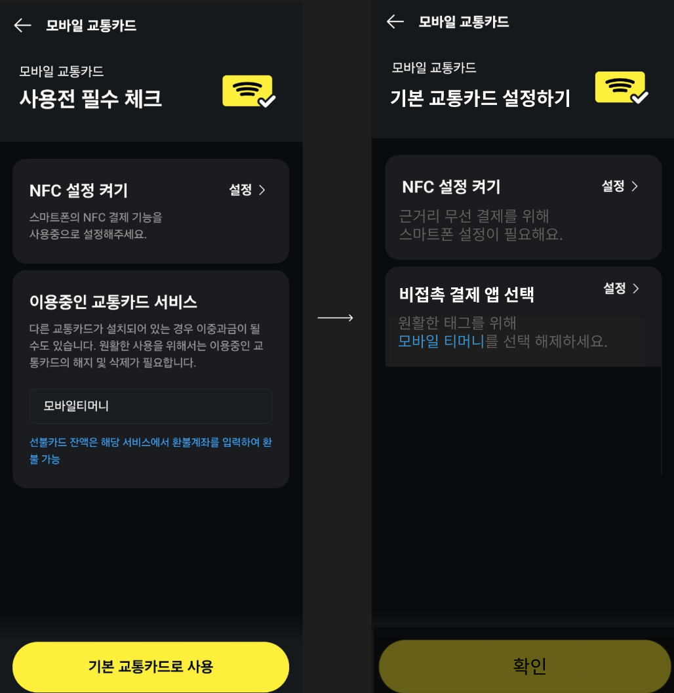

카카오페이 교통카드 설정 개선 프로젝트
"카카오페이로 교통카드 설정, 더 쉽고 간편하게!"
사용자 경험(UX)을 개선하기 위해, 문구의 일관성과 가독성을 높이고
설정 단계를 간소화한 UX Writing 개선 프로젝트를 시작했어요.
✨ 어떤 변화가 있나요?
- ✔️ 불필요한 행동 줄이기
- "타 교통카드 삭제 및 해지" 대신, 더 유연한 표현으로 설정 유도.
- "선택 해제"와 같은 문구를 통해 부담 없는 설정 경험 제공.
- ✔️ 일관된 문구로 가독성 강화
- 페이지 내 동사/명사/어미 표현을 통일해 사용자가 설정 과정을 쉽게 이해할 수 있도록 개선.
- ✔️ 설정 과정 간소화
- 설정 단계를 최소화하고, "비접촉 결제 가능" 등 혜택을 강조해 사용자 행동 유도.
🌟 이 프로젝트로 달라질 점은?
- 더 쉽고 간단한 설정 과정
- 설정 성공률 증가
- 사용자 경험 개선으로 서비스 만족도 상승
복잡했던 설정 과정은 이제 간결하고 친절한 안내로 대체됩니다.
카카오페이 교통카드 설정이 더 이상 스트레스가 아닌, 간단한 선택이 될 거예요!